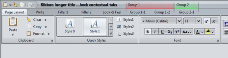
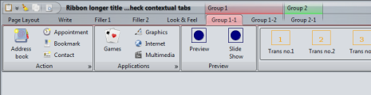
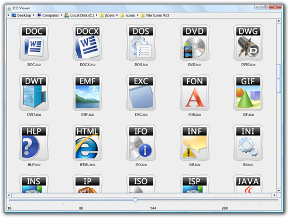
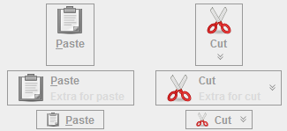
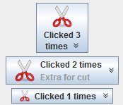
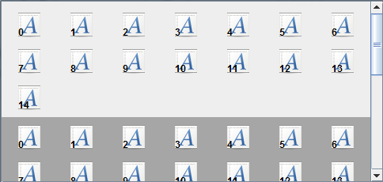
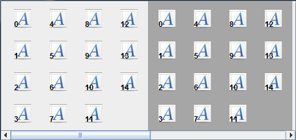

SVG transcoder
The org.jvnet.flamingo.svg.SvgTranscoder has the following new functionality:
- Generated Java2D class has two static methods
getOrigWidth()andgetOrigHeight()to query the default bounds of the original SVG image. setJavaPackageName(String)API allows changing the package name of the generated Java2D class.setJavaToImplementResizableIconInterface(boolean)API allows specifying that the generated Java2D class should implement theorg.jvnet.flamingo.common.icon.ResizableIconinterface, making it ready to be used instead of theorg.jvnet.flamingo.svg.SvgBatikResizableIconclass. This comes handy since the heavy transcoding is done offline, and the size of the compiled class is comparable with the size of the compressed SVG file (especially if you turn the debugging info off).
Ribbon contextual tasks
The new org.jvnet.flamingo.ribbon.RibbonContextualTaskGroup
implements contextual task groups.
Use the following JRibbon
APIs to operate
on contextual task groups:
addContextualTaskGroup(RibbonContextualTaskGroup)to add a new contextual task group. By default the tasks of the newly added group are not visible.setVisible(RibbonContextualTaskGroup, boolean)to change the visibility of tasks in the specified contextual task group.isVisible(RibbonContextualTaskGroup)to query the visibility status of tasks in the specific contextual task group.
The screenshot below shows a selected contextual task under Metal look-and-feel:

JRibbonFrame top-level window
The org.jvnet.flamingo.ribbon.JRibbonFrame
is going to be the only way to have a ribbon in your frame. It extends the
JFrame and enforces that a
JRibbon component is always in the
BorderLayout.NORTH position. Under
the hood, it also allows third-party look-and-feels (such as Substance) to
"relocate" the taskbar to the title pane and paint the contextual task group
headers. Going forward, the JRibbon
class will have package-protected constructor. This will be part of 4.0 release
to ensure easier transition to the new approach.
Here is a screenshot of JRibbonFrame
running in decorated mode under Substance
look-and-feel with Substance plugin
for Flamingo. It shows the taskbar panel placed on the left hand side of the
title bar:

Here is a screenshot of the same ribbon frame with two contextual task groups made visible. Note how the group headers are painted on the title pane and force the title text to be clipped:
And the same ribbon frame with one of the contextual tasks selected:
Dynamic content of in-ribbon galleries
The following APIs were added to the
org.jvnet.flamingo.ribbon.JRibbonBand
class to allow dynamic changes
to in-ribbon galleries:
addRibbonGalleryButtons()to add toggle command buttons to a button group in a ribbon gallery.removeRibbonGalleryButtons()to remove toggle command buttons from a ribbon gallery.setSelectedRibbonGalleryButton()to select a toggle command button in a ribbon gallery.
Decorating the ribbon under Substance
The Substance plugin
for Flamingo makes use of the
SubstanceLookAndFeel.setDecorationType
API that allows the applications to mark specific visual areas as decoration
areas. Specifically for the ribbon component, this plugin sets the following
decoration types on the ribbon (see below for the screenshots):
- The ribbon itself is marked as
DecorationAreaType.HEADER. - The task buttons and task bands are marked as
DecorationAreaType.GENERAL.
The first makes the ribbon blend with the title pane, especially under decorated mode. The second makes all the ribbon controls be a) visually different from the title pane and b) provide a slightly different visual appearance than the "real" application area. The following screenshots illustrate these two points.
Here is the ribbon with the old look under Substance Autumn skin:

And here is the new look. Note how the ribbon blends much better with the title pane, clearly delineating the currently selected task:

The old implementation under Coffee Creme skin:

And the new visuals that make the top part of the application look more polished:

Finally, the old visuals under the Business Blue Steel skin:

And the new visuals (see explanation below):

Note that Business Blue Steel defines a separate scheme bundle for the
DecorationAreaType.GENERAL decoration
areas. For ribbon, it helps to make it stand apart from the rest of the application
window, but not in a too "aggressive" way. Also note how this scheme bundle is
applied to all ribbon visuals, including the command buttons, icons, in-ribbon
galleries and the usual controls (combo boxes, buttons).
ICO-based resizable icons
The org.jvnet.flamingo.common.icon.IcoWrapperResizableIcon
is based on Jeff Friesen's article
from InformIT.com. This class allows
loading .ICO files and exposing them as implementation of the
ResizableIcon interface.
Here is a screenshot of an application showing ICO-based icons from the Jordan Michael’s portfolio under 128*128 size:
Disabling command buttons
Calling setEnabled(false) on a
command button will display the correct disabled state. As with the core
AbstractButton,
you can set a disabled icon with
setDisabledIcon API. The helper
org.jvnet.flamingo.common.icon.FilteredResizableIcon
class can be used to wrap an existing resizable icon with a
ColorConvertOp based on
ColorSpace.CS_GRAY (core JDK functionality).
Here is a screenshot of a few command buttons in enabled state:
And here are the same buttons in disabled state. Note how the visuals are changed to reflect the new state (including the foreground color of the main text and the extra text, as well as the popup arrow icon). The buttons in the first column specify a custom disabled icon (with the APIs mentioned above).
Changing text of command buttons
Previously, once a command button has been created, it was
not possible to change its display text with the
setText(String) API.
This release tracks the display text and recomputing the strings under
the relevant button states. Here is a screenshot of a few command
buttons with the default "Click!" text:
And here are the same buttons after they have been clicked a number of times. Each button has an action listener that counts the number of clicks and updates the button text accordingly. Note how the displayed text and the preferred size of the buttons are changed (automatically):
Changing font of command buttons
Previously, the command button would ignore setting a custom font set by the
setFont(Font) API. This release
supports this API. Here is a screenshot of a few command buttons using a custom
italic font:
Auto-repeat mode on command buttons
The JCommandButton component
has two new APIs to support the auto-repeat action mode. This mode comes
in handy when you want to have the action listeners invoked every N
milliseconds as long as the button is pressed.
- Use the
setAutoRepeatAction(true)to set the auto-repeat action mode on. - The default initial delay is 500 milliseconds and the default
subsequent delay is 100 milliseconds. To change the default values, call
setAutoRepeatActionIntervals(int, int)API.
Column-fill mode on command button panels
Previously, the command
button panel component only supported row-fill mode. Under this mode,
the buttons are placed in row-first fashion, wrapping the rows when
the panel width is reached. Now, the component also supports the
column-fill mode. Use the
setLayoutKind(LayoutKind)
API to specify the layout mode.
Here is a screenshot of a command button panel with the default row-fill mode (note the vertical scroll bar):
and here is the same panel under the column-fill mode (notice the horizontal scroll bar):
